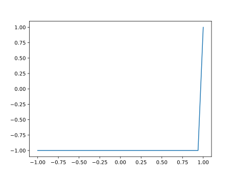
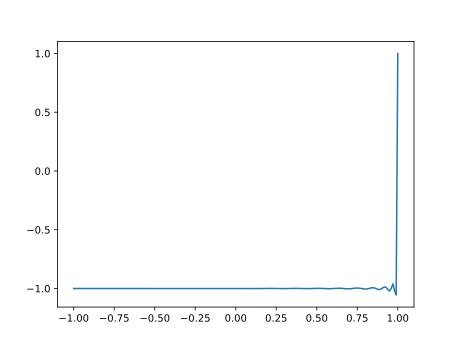
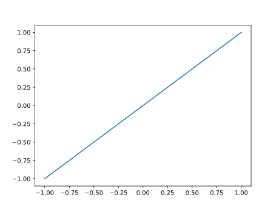

MultiGridBarrier 0.11.1
MultiGridBarrier is a Julia module for solving nonlinear convex optimization problems in function spaces, such as p-Laplace problems. When regularity conditions are satisfied, the solvers are quasi-optimal.
The MultiGridBarrier module features finite element and spectral discretizations in 1d and 2d.
Finite elements
After installing MultiGridBarrier with the Julia package manager, in a Jupyter notebook, one solves a 1d p-Laplace problem as follows:
using MultiGridBarrier
fem1d_solve(L=5,p=1.0,verbose=false);
A 2d p-Laplace problem:
fem2d_solve(L=3,p=1.0,verbose=false);Spectral elements
Solve a 1d p-Laplace problem using spectral methods as follows:
spectral1d_solve(n=40,p=1.0,verbose=false);
A 2d p-Laplace problem:
spectral2d_solve(n=5,p=1.5,verbose=false);
Solving $\infty$-Laplacians
For $p \geq 1$ and domain $\Omega$, the solution $u$ of the $p$-Laplace problem is the minimizer of $J(u) = \|\nabla u\|_{L^p(\Omega)}^p + \int_{\Omega} fu,$ where $u$ is in a suitable space of function satisfying, e.g. Dirichlet conditions, and $f$ is a forcing. This definition must be modified for the $\infty$-Laplace problem. Here we show how to minimize: $J(u) = \|\nabla u\|_{L^\infty(\Omega)}^p + \int_{\Omega} fu.$ We put $p=1$ for simplicity.
fem1d_solve(L=5,p=1.0,state_variables=[:u :dirichlet; :s :uniform],verbose=false);
Parabolic problems
A time-dependent problem:
parabolic_solve(h=0.1,L=3,printer=anim->anim.save("parabolic.mp4"),verbose=false);Module reference
MultiGridBarrier.MultiGridBarrier — Modulemodule MultiGridBarrierModule MultiGridBarrier solves convex optimization problems in function spaces, for example, solving p-Laplace problems. We recommend to start with the functions fem1d_solve(), fem2d_solve(), spectral1d_solve(), spectral2d_solve(). These functions are sufficient to solve p-Laplace problems in 1d or 2d, using finite or spectral elements.
For more general use, the user will need to familiarize themselves with the basic ideas of convex optimization.
- Overview of convex optimization in function spaces by MultiGrid Barrier method.
The general idea is to build a multigrid hierarchy, represented by an AMG object, and barrier for a convex set, represented by a Barrier object, and then solve a convex optimization problem using the amgb() solver.
To generate the multigrid hierarchy represented by the AMG object, use either fem1d(), fem2d(), spectral1d() or spectral2d() functions. These constructors will assemble suitable AMG objects for either FEM or spectral discretizations, in 1d or 2d. One should think of these four constructors as being specialized in constructing some specific function spaces. A user can use the amg() constructor directly if custom function spaces are required, but this is more difficult.
We now describe the barrier function.
Assume that $\Omega \subset \mathbb{R}^d$ is some open set. Consider the example of the p-Laplace problem on $\Omega$. Let $f(x)$ be a "forcing" (a function) on $\Omega$, and $1 \leq p < \infty$. One wishes to solve the minimization problem
\[\begin{equation} \inf_u \int_{\Omega} fu + \|\nabla u\|_2^p \, dx. \tag{1} \end{equation}\]
Generally speaking, $u$ will range in some function space, e.g. a space of differentiable functions satisfying homogeneous Dirichlet conditions. Under some conditions, minimizing (1) is equivalent to solving the p-Laplace PDE:
\[\nabla \cdot (\|\nabla u\|_2^{p-2}\nabla u) = {1 \over p} f.\]
We introduce the "slack function" $s(x)$ and replace (1) with the following equivalent problem:
\[\begin{equation} \inf_{s(x) \geq \|\nabla u(x)\|_2^p} \int_{\Omega} fu + s \, dx. \tag{2} \end{equation}\]
Define the convex set $\mathcal{Q} = \{ (u(x),q(x),s(x)) \; : \; s(x) \geq \|q(x)\|_2^p \}$, and
\[z = \begin{bmatrix} u \\ s \end{bmatrix}, \qquad c^T = [f,0,1], \qquad Dz = \begin{bmatrix} u \\ \nabla u \\ s \end{bmatrix}.\]
Then, (2) can be rewritten as
\[\begin{equation} \inf_{Dz \in \mathcal{Q}} \int_{\Omega} c^T(x)Dz(x) \, dx. \tag{3} \end{equation}\]
Recall that a barrier for $\mathcal{Q}$ is a convex function $\mathcal{F}$ on $\mathcal{Q}$ such that $\mathcal{F} < \infty$ in the interior of $\mathcal{Q}$ and $\mathcal{F} = \infty$ on the boundary of $\mathcal{Q}$. A barrier for the p-Laplace problem is:
\[\mathcal{F}(u,q,s) = \int_{\Omega} -\log(s^{2 \over p} - \|q\|_2^2) - 2\log s \, dx = \int_{\Omega} F(Dz(x)) \, dx.\]
The central path $z^*(t)$ minimizes, for each fixed $t>0$, the quantity
\[\int_{\Omega} tc^TDz + F(Dz) \, dx.\]
As $t \to \infty$, $z^*(t)$ forms a minimizing sequence (or filter) for (3). We think of the function $c(x)$ as the "functional" that we seek to minimize.
The Convex{T} type describes various convex sets (denoted $Q$ above) by way of functions barrier(), cobarrier() and slack(). barrier is indeed a barrier for $Q$, cobarrier() is a barrier for a related feasibility problems, and slack() is used in solving the feasibility problem. Convex{T} objects can be created using the various convex_...() constructors, e.g. convex_Euclidian_power() for the p-Laplace problem.
Once one has AMG and Convex objects, and a suitable "functional" c, one uses the amgb() function to solve the optimization problem by the MultiGrid Barrier method, a variant of the barrier method (or interior point method) that is quasi-optimal for sufficiently regular problems.
Types reference
MultiGridBarrier.AMGBConvergenceFailure — TypeAMGBConvergenceFailure <: ExceptionThrown when the AMGB solver fails to converge (feasibility or main phase). Includes a descriptive message about the failure.
MultiGridBarrier.Convex — TypeConvex{T}Container for a convex constraint set used by AMGB.
Fields:
- barrier(x, y): barrier of the set
- cobarrier(x, yhat): barrier with slack for feasibility
- slack(x, y): initial slack value
Construct via helpers like convex_linear, convex_Euclidian_power, convex_piecewise, or intersect.
MultiGridBarrier.FEM1D — TypeFEM1D1D FEM geometry descriptor. Field: L::Int (levels). Use with amgb.
MultiGridBarrier.FEM2D — TypeFEM2D{T}2D FEM geometry descriptor for quadratic+bubble triangles. Fields: K::Matrix{T} (3n×2 mesh), L::Int (levels). Use with amgb.
MultiGridBarrier.SPECTRAL1D — TypeSPECTRAL1D1D spectral geometry descriptor (Chebyshev). Field: n::Int (nodes). Use with amgb.
MultiGridBarrier.SPECTRAL2D — TypeSPECTRAL2D2D spectral geometry descriptor (tensor Chebyshev). Field: n::Int (nodes per dim). Use with amgb.
Functions reference
Base.intersect — Methodintersect(U::Convex{T}, rest...) where {T}Return the intersection of convex domains as a single Convex{T}. Equivalent to convex_piecewise with all pieces active.
MultiGridBarrier.amgb — Methodamgb(geometry::Geometry{T,Mat,Discretization}; kwargs...) where {T, Mat, Discretization}Algebraic MultiGrid Barrier (AMGB) solver for nonlinear convex optimization problems in function spaces using multigrid barrier methods.
This is the main high-level entry point for solving p-Laplace and related problems using the barrier method with multigrid acceleration. The solver operates in two phases:
- Feasibility phase: Finds an interior point for the constraint set (if needed)
- Main optimization phase: Solves the barrier-augmented optimization problem
Arguments
geometry: Discretization geometry (default:fem1d()). Options:fem1d(L=n): 1D finite elements with 2^L elementsfem2d(L=n, K=mesh): 2D finite elementsspectral1d(n=m): 1D spectral with m nodesspectral2d(n=m): 2D spectral with m×m nodes
Keyword Arguments
Problem Specification
dim::Integer = amg_dim(geometry.discretization): Problem dimension (1 or 2), auto-detected from geometrystate_variables::Matrix{Symbol} = [:u :dirichlet; :s :full]: Solution components and their function spacesD::Matrix{Symbol} = default_D[dim]: Differential operators to apply to state variablesx::Matrix{T} = M[1].x: Mesh/sample points wherefandgare evaluated when they are functions
Discretization Control
M: AMG hierarchy. If not provided, it is constructed automatically fromgeometry,state_variables, andD.
Problem Data
p::T = 1.0: Exponent for p-Laplace operator (p ≥ 1)g::Function = default_g(T)[dim]: Boundary conditions/initial guess (function of spatial coordinates)g_grid::Matrix{T}: Alternative tog, directly provide values on grid (default:gevaluated atx)f::Function = default_f(T)[dim]: Forcing term/cost functional (function of spatial coordinates)f_grid::Matrix{T}: Alternative tof, directly provide values on grid (default:fevaluated atx)Q::Convex{T} = convex_Euclidian_power(T, idx=2:dim+2, p=x->p): Convex constraint set
Output Control
verbose::Bool = true: Display progress bar during solvingshow::Bool = true: Plot the computed solution using PyPlot (requires PyPlot.jl)return_details::Bool = false:false: Return only the solution matrixztrue: Return full solution object with detailed solver information
logfile = devnull: IO stream for logging (default: no file logging)
Solver Control
Passthrough Arguments
Additional keyword arguments are passed through to internal solver components:
tol = sqrt(eps(T)): Stopping tolerance; the method stops once1/t < tolwheretis the barrier parametert = T(0.1): Initial barrier parameter for the main solvet_feasibility = t: Initial barrier parameter for the feasibility solvemaxit = 10000: Maximum number of barrier iterationskappa = T(10.0): Initial step size multiplier for barrier parametert. Adapted dynamically but never exceeds this initial valuec0 = T(0): Base offset added to the objective (c0 + t*c)early_stop = z->false: Functionz -> Bool; iftrue, the iteration halts early (e.g., to stop feasibility phase when interior point found)max_newton = ceil((log2(-log2(eps(T))))+2): Maximum Newton iterations per inner solvestopping_criterion = stopping_inexact(sqrt(minimum(M[1].w))/2, T(0.5)): Stopping criterion for Newton solver. Options:stopping_exact(theta): Check if objective decreased and gradient norm fell below tolerancestopping_inexact(lambda_tol, theta): Inexact Newton with mesh-dependent tolerance
line_search = linesearch_backtracking(T): Line search strategy. Options:linesearch_backtracking(T): Backtracking line search (default)linesearch_illinois(T): Illinois algorithm-based line search
finalize = stopping_exact(T(0.5)): Finalization stopping criterion for the last Newton solve (stricter convergence)
Default Values
The defaults for f, g, and D depend on the problem dimension:
1D Problems
f(x) = [0.5, 0.0, 1.0]- Forcing termg(x) = [x[1], 2]- Boundary conditionsD = [:u :id; :u :dx; :s :id]- Identity, derivative, identity
2D Problems
f(x) = [0.5, 0.0, 0.0, 1.0]- Forcing termg(x) = [x[1]²+x[2]², 100.0]- Boundary conditionsD = [:u :id; :u :dx; :u :dy; :s :id]- Identity, x-derivative, y-derivative, identity
Returns
If
return_details=false(default): Matrix of size(n_nodes, n_components)containing the solutionIf
return_details=true: NamedTuple with fields:z: Solution matrix of size(n_nodes, n_components)containing the computed solutionSOL_feasibility: Feasibility phase results (nothingif initial point was already feasible), otherwise a solution object (see below)SOL_main: Main optimization phase results as a solution object (see below)log: String containing detailed iteration log for debugging
Each solution object (
SOL_feasibilityandSOL_main) is a NamedTuple containing:z: Solution vector (flattened; for feasibility phase includes auxiliary slack variable)z_unfinalized: Solution before final refinement stepc: Cost functional used in this phaseits: Iteration counts across levels and barrier steps (L×k matrix where L is number of levels, k is number of barrier iterations)ts: Sequence of barrier parameters t used (length k)kappas: Step size multipliers used at each iteration (length k)times: Wall-clock timestamps for each iteration (length k)M: The AMG hierarchy used (M[2] for feasibility, M[1] for main)t_begin,t_end,t_elapsed: Timing information for this phasepassed: Boolean array indicating phase 1 success at each levelc_dot_Dz: Values of ⟨c, D*z⟩ at each barrier iteration (length k)
Algorithm Overview
The AMGB method combines:
- Interior point method: Uses logarithmic barriers to handle constraints
- Multigrid acceleration: Solves on hierarchy of grids from coarse to fine
- Damped Newton iteration: Inner solver with line search for robustness
The solver automatically handles:
- Construction of appropriate discretization and multigrid hierarchy
- Feasibility restoration when initial point is infeasible
- Adaptive barrier parameter updates with step size control
- Convergence monitoring across multiple grid levels
- Progress reporting (when
verbose=true) and logging (tologfileif specified)
Errors
Throws AMGBConvergenceFailure if:
- The feasibility problem cannot be solved (problem may be infeasible)
- The main optimization fails to converge within
maxititerations - Newton iteration fails at any grid level
Examples
# Solve 1D p-Laplace problem with p=1.5 using FEM
z = amgb(fem1d(L=4); p=1.5)
# Solve 2D problem with spectral elements
z = amgb(spectral2d(n=8); p=2.0)
# Custom boundary conditions
g_custom(x) = [sin(π*x[1])*sin(π*x[2]), 10.0]
z = amgb(fem2d(L=3); g=g_custom)
# Get detailed solution information
sol = amgb(fem1d(L=3); return_details=true, verbose=true)
println("Iterations: ", sum(sol.SOL_main.its))
println("Final barrier parameter: ", sol.SOL_main.ts[end])
# Log iterations to a file
open("solver.log", "w") do io
amgb(fem2d(L=2); logfile=io, verbose=false)
endSee Also
fem1d_solve,fem2d_solve,spectral1d_solve,spectral2d_solve: Convenience wrappers for specific discretizationsConvex: Constraint set specification type
MultiGridBarrier.apply_D — Methodapply_D(D,z::Vector{T}) where {T} = hcat([D[k]*z for k in 1:length(D)]...)MultiGridBarrier.convex_Euclidian_power — Methodconvex_Euclidian_power(::Type{T}=Float64; idx=Colon(), A=(x)->I, b=(x)->T(0), p=x->T(2))Create a convex set defined by Euclidean norm power constraints.
Constructs a Convex{T} object representing the power cone: {y : s ≥ ‖q‖₂^p} where [q; s] = A(x)*y[idx] + b(x)
This is the fundamental constraint for p-Laplace problems where we need s ≥ ‖∇u‖^p for some scalar field u.
Arguments
T::Type=Float64: Numeric type for computations
Keyword Arguments
idx=Colon(): Indices of y to which transformation appliesA::Function: Matrix functionx -> A(x)for linear transformationb::Function: Vector functionx -> b(x)for affine shiftp::Function: Exponent functionx -> p(x)where p(x) ≥ 1
Returns
Convex{T} object with logarithmic barrier for the power cone
Mathematical Details
The barrier function is:
- For p = 2:
-log(s² - ‖q‖²) - For p ≠ 2:
-log(s^(2/p) - ‖q‖²) - μ(p)*log(s)where μ(p) = 0 if p∈{1,2}, 1 if p<2, 2 if p>2
Examples
# Standard p-Laplace constraint: s ≥ ‖∇u‖^p
Q = convex_Euclidian_power(; idx=2:4, p=x->1.5)
# Spatially varying exponent
p_var(x) = 1.0 + 0.5 * x[1] # variable p
Q = convex_Euclidian_power(; p=p_var)
# Second-order cone constraint: s ≥ ‖q‖₂
Q = convex_Euclidian_power(; p=x->1.0)MultiGridBarrier.convex_linear — Methodconvex_linear(::Type{T}=Float64; idx=Colon(), A=(x)->I, b=(x)->T(0))Create a convex set defined by linear inequality constraints.
Constructs a Convex{T} object representing the feasible region: {y : A(x)*y[idx] + b(x) ≤ 0} for each spatial point x.
Arguments
T::Type=Float64: Numeric type for computations
Keyword Arguments
idx=Colon(): Indices of y to which constraints apply (default: all)A::Function: Matrix functionx -> A(x)for constraint coefficientsb::Function: Vector functionx -> b(x)for constraint bounds
Returns
Convex{T} object with appropriate barrier functions
Examples
# Box constraints: -1 ≤ y ≤ 1
A_box(x) = [I; -I]
b_box(x) = [ones(n); ones(n)]
Q = convex_linear(; A=A_box, b=b_box)
# Single linear constraint: y[1] + 2*y[2] ≤ 3
A_single(x) = [1.0 2.0]
b_single(x) = [-3.0]
Q = convex_linear(; A=A_single, b=b_single, idx=1:2)MultiGridBarrier.convex_piecewise — Methodconvex_piecewise(::Type{T}=Float64; Q::Vector{Convex{T}}, select::Function=(tr=fill(true,length(Q));x->tr)) where {T}Build a Convex{T} that combines multiple convex domains with spatial selectivity.
Arguments
Q::Vector{Convex{T}}: a vector of convex pieces to be combined.select::Function: a functionx -> Vector{Bool}indicating which pieces are active atx. Default: all pieces active everywhere (equivalent to intersection).
Semantics
For sel = select(x), the resulting convex domain has:
barrier(x, y) = ∑(Q[k].barrier(x, y) for k where sel[k])cobarrier(x, yhat) = ∑(Q[k].cobarrier(x, yhat) for k where sel[k])slack(x, y) = max(Q[k].slack(x, y) for k where sel[k])
The slack is the maximum over active pieces, ensuring a single slack value suffices for feasibility at each x.
Use cases
- Intersections (default): All pieces active everywhere creates
Q₁ ∩ Q₂ ∩ ... - Spatial switching: Different constraints in different regions
- Conditional constraints: Activate constraints based on solution state
Examples
# Intersection (using default select)
U = convex_Euclidian_power(Float64; idx=[1, 3], p = x->2)
V = convex_linear(Float64; A = x->A_matrix, b = x->b_vector)
Qint = convex_piecewise(Float64; Q = [U, V]) # U ∩ V everywhere
# Region-dependent constraints
Q_left = convex_Euclidian_power(Float64; p = x->1.5)
Q_right = convex_Euclidian_power(Float64; p = x->2.0)
select(x) = [x[1] < 0, x[1] >= 0] # left half vs right half
Qreg = convex_piecewise(Float64; Q = [Q_left, Q_right], select = select)
# Conditional activation
Q_base = convex_linear(Float64; A = x->I, b = x->-ones(2))
Q_extra = convex_Euclidian_power(Float64; p = x->3)
select(x) = [true, norm(x) > 0.5] # extra constraint outside radius 0.5
Qcond = convex_piecewise(Float64; Q = [Q_base, Q_extra], select = select)See also: intersect, convex_linear, convex_Euclidian_power.
MultiGridBarrier.fem1d — Methodfem1d(::Type{T}=Float64; L=4, kwargs...)Construct 1D FEM geometry (piecewise linear) on [-1, 1]. Returns a Geometry suitable for use with amgb. Keyword L sets 2^L elements.
MultiGridBarrier.fem1d_solve — Methodfem1d_solve(::Type{T}=Float64;rest...) where {T} = amgb(fem1d(T;rest...);rest...)MultiGridBarrier.fem2d — Methodfem2d(::Type{T}=Float64; L=2, K=T[-1 -1;1 -1;-1 1;1 -1;1 1;-1 1], kwargs...)Construct 2D FEM geometry (quadratic + bubble) on a triangular mesh. Returns a Geometry suitable for use with amgb. Keywords: L levels, K 3n×2 vertices.
MultiGridBarrier.fem2d_solve — Methodfem2d_solve(::Type{T}=Float64;rest...) where {T} = amgb(fem2d(T;rest...);rest...)MultiGridBarrier.interpolate — Functioninterpolate(M::Geometry, z::Vector, t)Interpolate a solution vector at specified points.
Given a solution z on the mesh M, evaluates the solution at new points t using the appropriate interpolation method for the discretization.
Supported discretizations
- 1D FEM (FEM1D): piecewise-linear interpolation
- 1D spectral (SPECTRAL1D): spectral polynomial interpolation
- 2D spectral (SPECTRAL2D): tensor-product spectral interpolation
Note: 2D FEM interpolation is not currently provided.
Arguments
M::Geometry: The geometry containing grid and basis informationz::Vector: Solution vector on the finest grid (length must match number of DOFs)t: Evaluation points. Format depends on dimension:- 1D: scalar or
Vector{T}of x-coordinates - 2D spectral:
Matrix{T}where each row is[x, y]
- 1D: scalar or
Returns
Interpolated values at the specified points. Shape matches input t.
Examples
# 1D interpolation (FEM)
geom = fem1d(L=3)
z = sin.(π .* vec(geom.x))
y = interpolate(geom, z, 0.5)
y_vec = interpolate(geom, z, [-0.5, 0.0, 0.5])
# 2D interpolation (spectral)
geom = spectral2d(n=4)
z = exp.(-geom.x[:,1].^2 .- geom.x[:,2].^2)
points = [0.0 0.0; 0.5 0.5; -0.5 0.5]
vals = interpolate(geom, z, points)MultiGridBarrier.parabolic_solve — Methodparabolic_solve(geometry=fem2d(), ::Type{T}=get_T(geometry); kwargs...)Solve time-dependent p-Laplace problems using implicit Euler timestepping.
Solves the parabolic PDE:
\[u_t - \nabla \cdot (\|\nabla u\|_2^{p-2}\nabla u) = -f_1\]
using implicit Euler discretization and barrier methods.
Arguments
geometry: Discretization geometry (default:fem2d())T::Type: Numeric type (inferred from geometry)
Keyword Arguments
Discretization
state_variables: State variables (default:[:u :dirichlet; :s1 :full; :s2 :full])D: Differential operators (default depends on dimension)dim::Int: Spatial dimension (auto-detected from geometry)M: Pre-built AMG hierarchy (constructed if not provided)
Time Integration
t0::T=0: Initial timet1::T=1: Final timeh::T=0.2: Time step size
Problem Parameters
p::T=1: Exponent for p-Laplacianf1: Source term function (default:x->T(0.5))f: Full forcing function (derived from f1 by default)g: Initial/boundary conditions (default depends on dimension)Q: Convex constraints (default: appropriate for p-Laplace)
Output Control
verbose::Bool=true: Show progress barshow::Bool=true: Animate solution after solvinginterval::Int=200: Animation frame interval (ms)printer: Function to display animation. Takes a single argumentanimation::matplotlib.animation.FuncAnimationand displays it. Default:(animation)->display("text/html", animation.to_html5_video(embed_limit=200.0)). Custom printers can save to file (e.g.,(anim)->anim.save("output.mp4")) or use alternative display methods.
Additional Parameters
rest...: Passed toamgbfor each time step
Returns
3D array U of size (n_nodes, n_components, n_timesteps) containing the solution at each time step.
Mathematical Formulation
The implicit Euler scheme $u_t ≈ (u_{k+1}-u_k)/h$ gives:
\[u_{k+1} - h\nabla \cdot (\|\nabla u_{k+1}\|^{p-2}\nabla u_{k+1}) = u_k - hf_1\]
We minimize the functional:
\[J(u) = \int_Ω \frac{1}{2}u² + \frac{h}{p}\|\nabla u\|^p + (hf_1 - u_k)u \, dx\]
With slack variables $s_1 ≥ u²$ and $s_2 ≥ \|\nabla u\|^p$, this becomes:
\[\min \int_Ω \frac{1}{2}s_1 + \frac{h}{p}s_2 + (hf_1 - u_k)u \, dx\]
Examples
# Basic 2D heat equation (p=2)
U = parabolic_solve(; p=2.0, h=0.1)
# 1D p-Laplace with custom parameters
U = parabolic_solve(fem1d(L=5); p=1.5, h=0.05, t1=2.0)
# Spectral discretization without animation
U = parabolic_solve(spectral2d(n=8); show=false, verbose=true)
# Custom initial condition
g_init(t, x) = [exp(-10*(x[1]^2 + x[2]^2)), 0, 0]
U = parabolic_solve(; g=g_init)See Also
MultiGridBarrier.spectral1d — Methodspectral1d(::Type{T}=Float64; n=16, kwargs...)Construct 1D spectral geometry with n Chebyshev nodes (degree n-1). Returns a Geometry suitable for use with amgb.
MultiGridBarrier.spectral1d_solve — Methodspectral1d_solve(::Type{T}=Float64;rest...) where {T} = amgb(spectral1d(T;rest...);rest...)MultiGridBarrier.spectral2d — Methodspectral2d(::Type{T}=Float64; n=4, kwargs...)Construct 2D spectral geometry with n×n Chebyshev nodes on [-1,1]^2. Returns a Geometry suitable for use with amgb.
MultiGridBarrier.spectral2d_solve — Methodspectral2d_solve(::Type{T}=Float64;rest...) where {T} = amgb(spectral2d(T;rest...);rest...)MultiGridBarrier.stopping_exact — Methodstopping_exact(theta::T) where {T}Create an exact stopping criterion for Newton methods.
Arguments
theta: tolerance parameter for gradient norm relative decrease (type T).
Returns
A stopping criterion function with signature: stop(ymin, ynext, gmin, gnext, n, ndecmin, ndec) -> Bool
where:
ymin: minimum objective value seen so far.ynext: current objective value.gmin: minimum gradient norm seen so far.gnext: current gradient vector.n: current Newton direction.ndecmin: square root of minimum Newton decrement seen so far.ndec: square root of current Newton decrement.
Algorithm
Returns true (stop) if both conditions hold:
- No objective improvement:
ynext ≥ ymin - Gradient norm stagnation:
‖gnext‖ ≥ theta * gmin
Notes
This criterion is "exact" in the sense that it requires both objective and gradient stagnation before stopping, making it suitable for high-precision optimization. Typical values of theta are in the range [0.1, 0.9].
MultiGridBarrier.stopping_inexact — Methodstopping_inexact(lambda_tol::T, theta::T) where {T}Create an inexact stopping criterion for Newton methods that combines Newton decrement and exact stopping conditions.
Arguments
lambda_tol: tolerance for the Newton decrement (type T).theta: tolerance parameter for the exact stopping criterion (type T).
Returns
A stopping criterion function with signature: stop(ymin, ynext, gmin, gnext, n, ndecmin, ndec) -> Bool
where:
ymin: minimum objective value seen so far.ynext: current objective value.gmin: minimum gradient norm seen so far.gnext: current gradient vector.n: current Newton direction.ndecmin: square root of minimum Newton decrement seen so far.ndec: square root of current Newton decrement (√(gᵀH⁻¹g)).
Algorithm
Returns true (stop) if either condition holds:
- Newton decrement condition:
ndec < lambda_tol - Exact stopping condition:
stopping_exact(theta)is satisfied
Notes
This criterion is "inexact" because it allows early termination based on the Newton decrement, which provides a quadratic convergence estimate. The Newton decrement λ = √(gᵀH⁻¹g) approximates the distance to the optimum in the Newton metric. Typical values: lambda_tol ∈ [1e-6, 1e-3], theta ∈ [0.1, 0.9].
PyPlot.plot — Functionplot(M::Geometry, z::Vector; kwargs...)
plot(M::AMG, U::Matrix{T}; interval=200, embed_limit=200.0, printer=...) where TVisualize solutions on meshes, either as static plots or animations.
Static plots (vector input)
When z is a vector, produces a single plot:
- 1D problems: Line plot. For spectral methods, you can specify evaluation points with
x=-1:0.01:1. - 2D FEM: Triangulated surface plot using the mesh structure.
- 2D spectral: 3D surface plot. You can specify evaluation grids with
x=-1:0.01:1, y=-1:0.01:1.
All other keyword arguments are passed to the underlying PyPlot functions.
Animations (matrix input)
When U is a matrix, each column U[:, i] becomes a frame in an animation:
- The axis limits are fixed across all frames for consistent scaling.
- Each frame is rendered using the appropriate static plot method.
- Options:
interval: Time between frames in milliseconds (default: 200)embed_limit: Maximum size in MB for HTML5 video output (default: 200.0)printer: Function to display the animation. Takes a single argumentanimation::matplotlib.animation.FuncAnimation. Default:(animation)->display("text/html", animation.to_html5_video(embed_limit=embed_limit))which renders the animation as HTML5 video in Jupyter/Pluto notebooks. Custom printers can save to file (e.g.,(anim)->anim.save("output.mp4")) or use alternative display methods.
Notes
- The animation method
plot(M::AMG, ...)is primarily used internally byparabolic_solve(show=true). If you already have an AMG hierarchyM, you can call it directly to animate a time seriesU.
Examples
# Static line plot
geom = fem1d(L=3)
z = sin.(π .* vec(geom.x))
plot(geom, z)
# Static surface plot with custom grid (2D spectral)
geom = spectral2d(n=4)
z = exp.(-geom.x[:,1].^2 .- geom.x[:,2].^2)
plot(geom, z; x=-1:0.05:1, y=-1:0.05:1)Index
MultiGridBarrier.MultiGridBarrierMultiGridBarrier.AMGBConvergenceFailureMultiGridBarrier.ConvexMultiGridBarrier.FEM1DMultiGridBarrier.FEM2DMultiGridBarrier.SPECTRAL1DMultiGridBarrier.SPECTRAL2DBase.intersectMultiGridBarrier.amgbMultiGridBarrier.apply_DMultiGridBarrier.convex_Euclidian_powerMultiGridBarrier.convex_linearMultiGridBarrier.convex_piecewiseMultiGridBarrier.fem1dMultiGridBarrier.fem1d_solveMultiGridBarrier.fem2dMultiGridBarrier.fem2d_solveMultiGridBarrier.interpolateMultiGridBarrier.parabolic_solveMultiGridBarrier.spectral1dMultiGridBarrier.spectral1d_solveMultiGridBarrier.spectral2dMultiGridBarrier.spectral2d_solveMultiGridBarrier.stopping_exactMultiGridBarrier.stopping_inexactPyPlot.plot